Monkey D. Luffy
Capitán de los Piratas del Sombrero de Paja, desde niño soñó con convertirse en el Rey de los Piratas,
inspirado por Shanks un amigo pirata, comió la Gomu Gomu no Mi, que lo convirtió en un hombre de goma.
Luffy es impulsivo, testarudo, pero con una bondad tan grande que cambia la vida de todos los que conoce,
Su carisma natural y su capacidad para unir a personas de todos los orígenes lo han llevado a formar una
tripulación poderosa y profundamente leal.
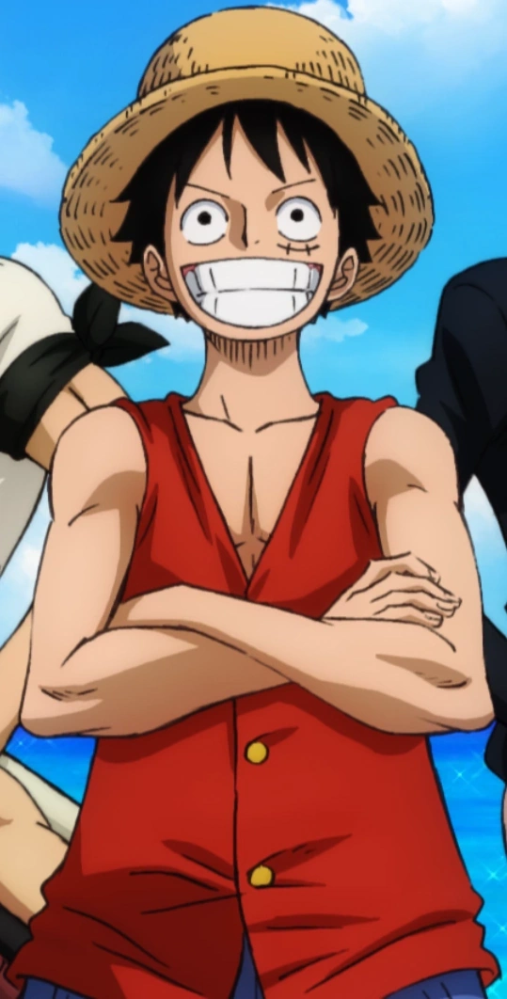
Roronoa Zoro
Es el espadachín de la tripulación, su sueño es convertirse en el mejor espadachín del mundo, para honrar
una promesa hecha a su amiga de la infancia. Maneja tres espadas a la vez, usando incluso una en la boca,
su determinación es inquebrantable, y es famoso por su sentido del honor y su voluntad de soportar cualquier dolor para proteger
a sus compañeros.
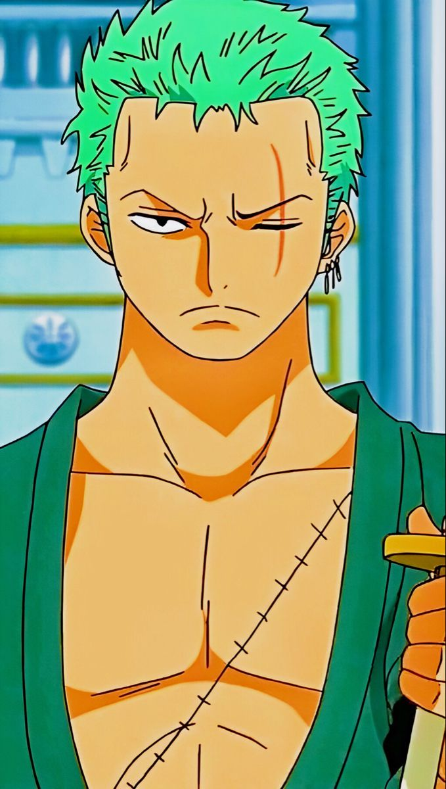
Vinsmoke Sanji
El cocinero de los Sombrero de Paja, es un caballero del mar con un código de honor muy particular: jamás golpea a una mujer,
sin importar la situación. Fue criado en el Baratie, un restaurante flotante, y más adelante se revela su oscuro pasado como
miembro de la familia Vinsmoke, Sanji es un experto en combate cuerpo a cuerpo, usando sólo sus piernas para no dañar sus manos de cocinero.
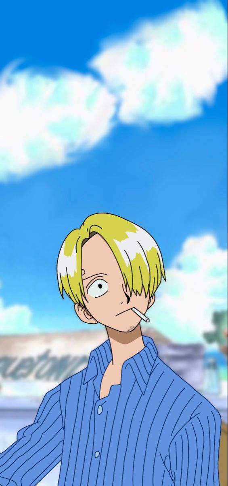
Nami
La navegante del grupo, comenzó su viaje como una ladrona de piratas con un pasado lleno de dolor, hasta que fue liberada por Luffy y se unió
a su causa. Su inteligencia táctica, habilidad para leer el clima y trazar rutas seguras hacen que sea una pieza clave para navegar por el Grand Line.
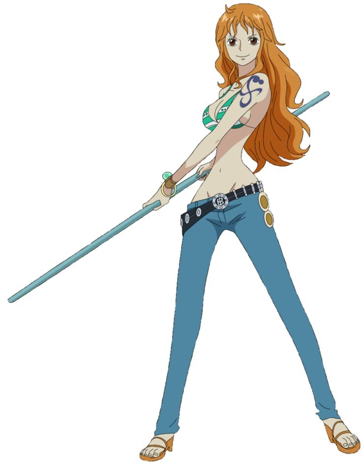
Chopper
Es el médico de la tripulación, un reno que comió la Hito Hito no Mi y adquirió forma y conciencia humanas, rechazado tanto por humanos como por otros renos,
Chopper encontró su lugar con los Sombrero de Paja. Es dulce, curioso y extremadamente empático, con un corazón enorme. Gracias a sus conocimientos médicos
y sus transformaciones, Chopper es capaz de ayudar en batalla y salvar vidas.
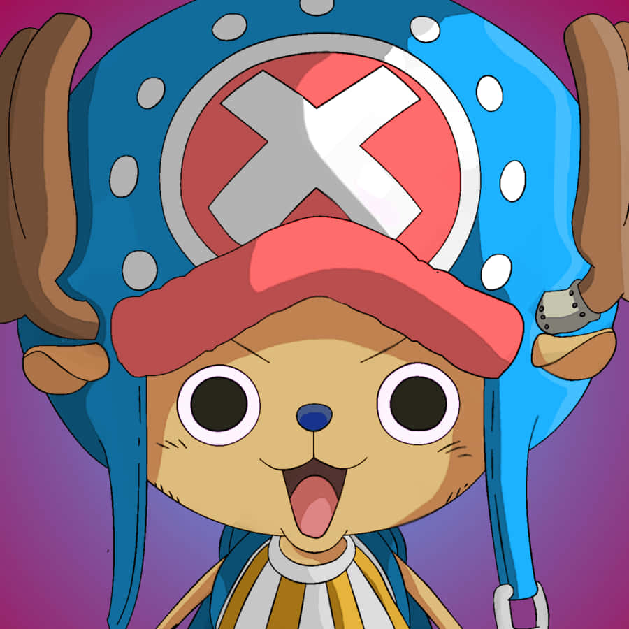
Shanks
Es uno de los piratas más respetados del mundo, no sólo por su poder, sino por su carácter equilibrado y su increíble dominio del Haki. Fue miembro de la tripulación
del Rey de los Piratas, Gol D. Roger, y es la figura que inspiró a Luffy a hacerse pirata, dándole su iconico sombrero de paja.
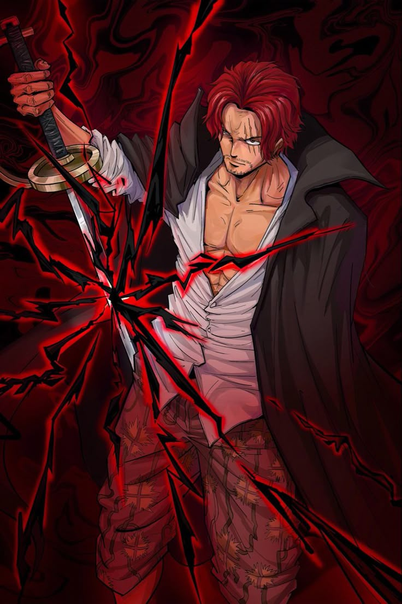
Marshall D. Teach
Antagonista pricipal y emperador del mar, durante años ocultó sus verdaderas intenciones dentro de la tripulación de Barbablanca, hasta que obtuvo
la Fruta del Diablo Yami Yami no Mi, que le permite controlar la oscuridad y anular los poderes de otros, tambien busca el one piece.
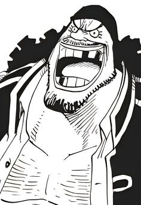
Monkey D. Garp
Es un legendario héroe de la Marina y abuelo de Luffy, Garp nunca consumió una Fruta del Diablo, confiando
completamente en su descomunal fuerza física y su maestría en Haki. Es conocido por haber enfrentado a Gol D. Roger en múltiples ocasiones, y aunque
representa la justicia, tiene una naturaleza rebelde y alegre que lo hace entrañable.
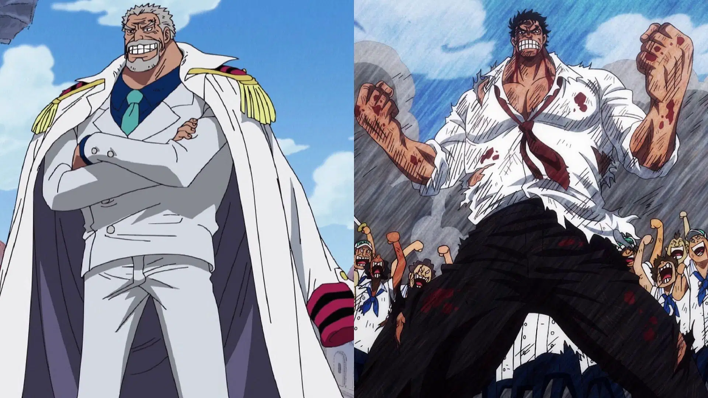
Akainu
Actual Gran Almirante de la Marina y el representante extremo de la “justicia absoluta”. Posee la Fruta del Diablo Magu Magu no Mi, que le otorga la
capacidad de generar y controlar lava. Su personalidad es brutal y sin compasión, dispuesto a eliminar incluso a civiles si considera que eso mantiene el orden.
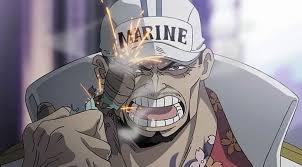
Gol D. Roger
Conocido como el Rey de los Piratas, es la figura legendaria que dio inicio a toda la era pirata en One Piece. Fue el único hombre que logró conquistar el Grand
Line por completo y descubrir el misterioso tesoro conocido como el One Piece, escondido en la isla final, Laugh Tale. Roger era carismático, impulsivo y poseía
un espíritu aventurero sin igual, no buscaba la conquista ni la opresión, sino la libertad absoluta.
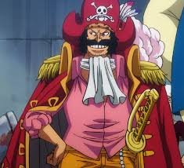


 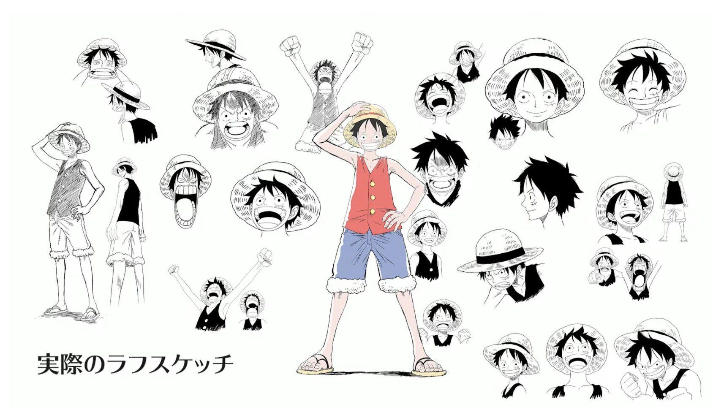
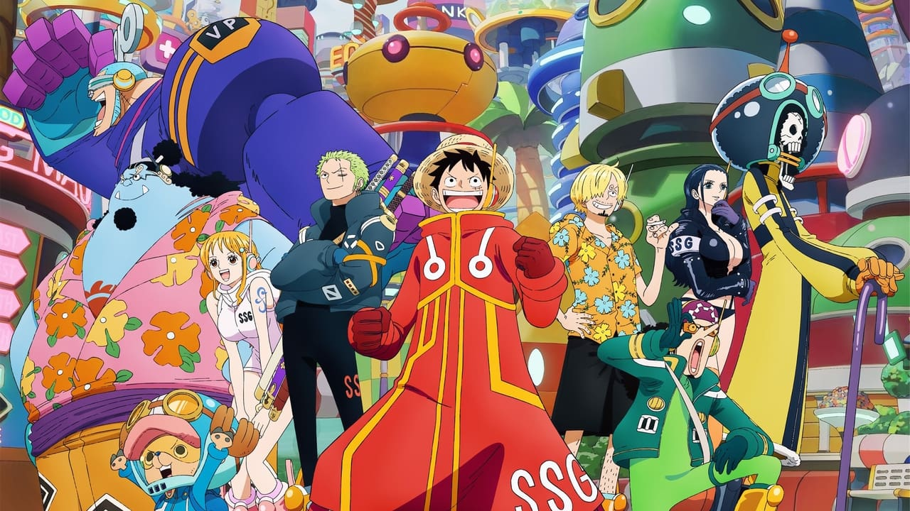
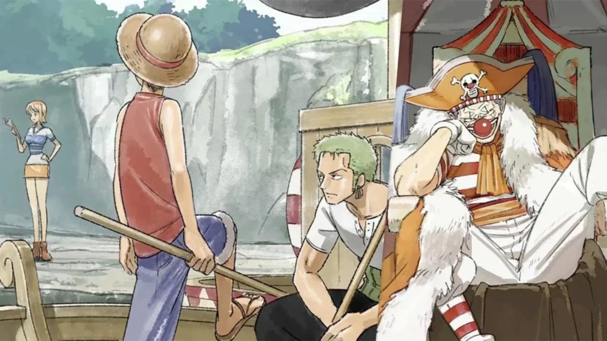
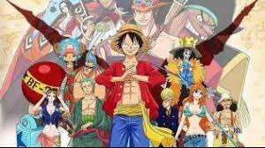
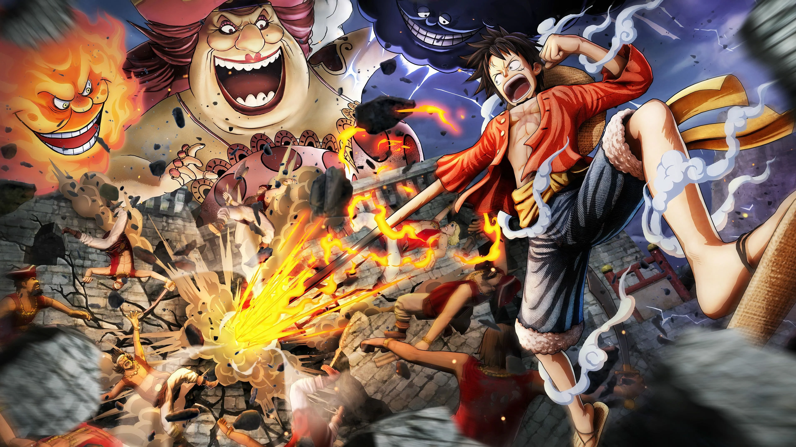
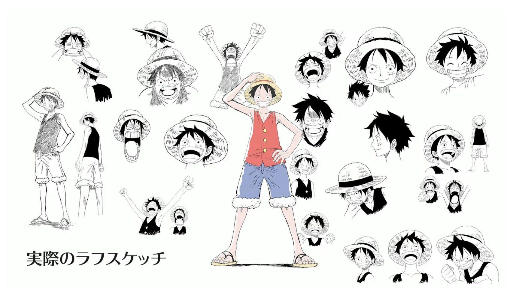
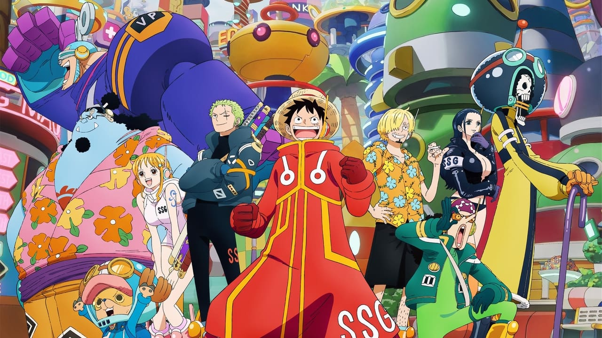
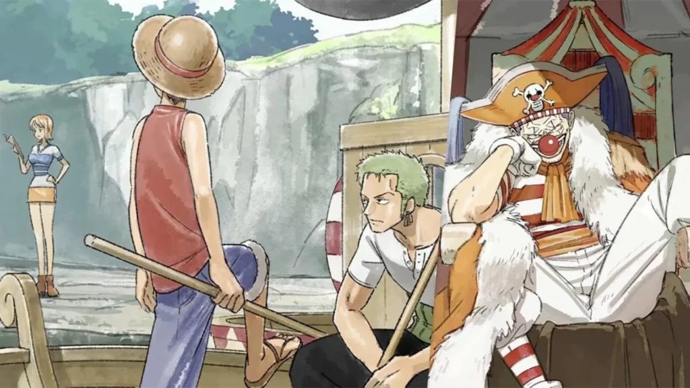
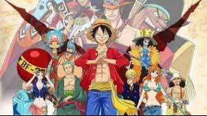
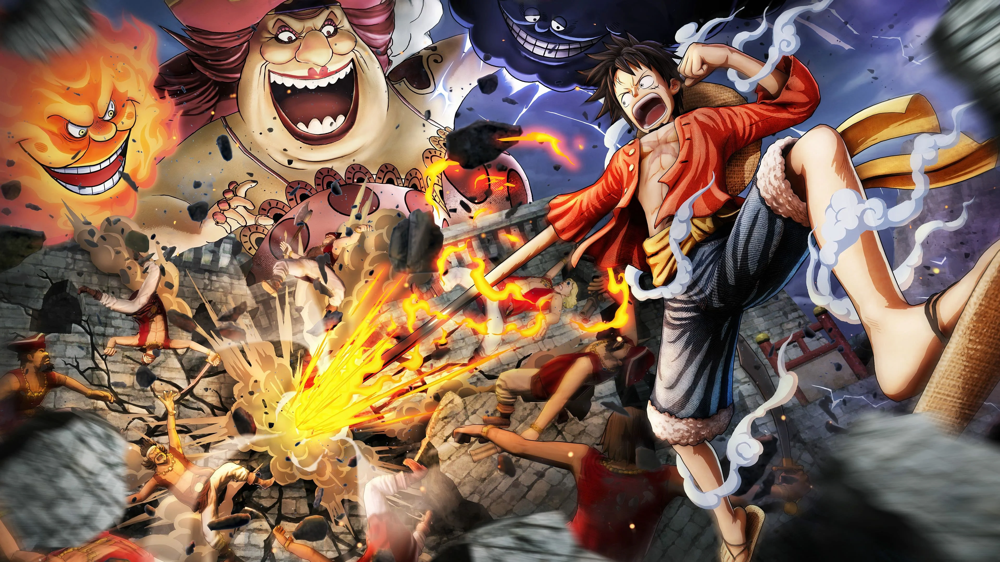